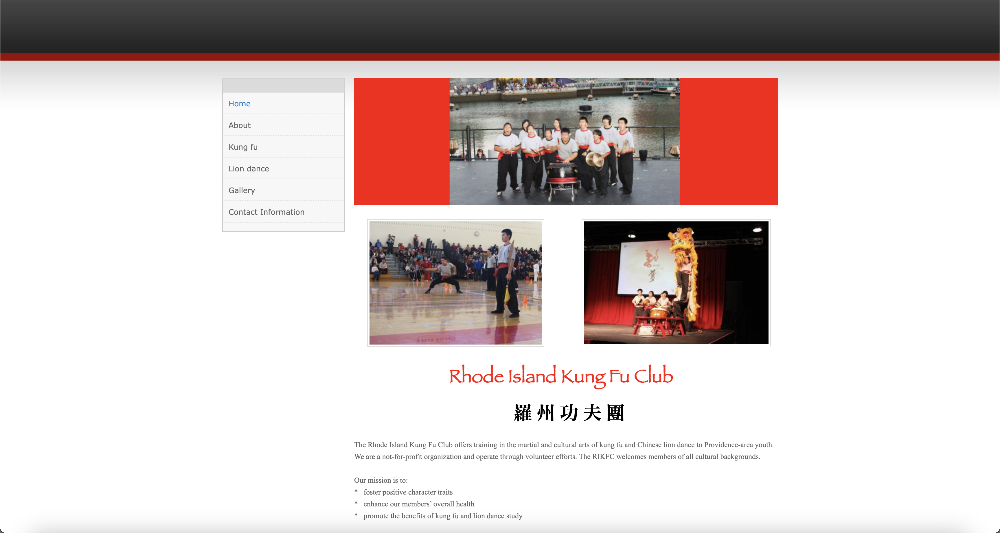

Responsive Redesign
Context
The goal of this assignment is to practice the workflow of redesigning a simple website: to analyze and identify flaws in an existing interface, create low-fidelity and high-fidelity prototypes for various screen sizes, and build a responsive website based on those prototypes.
Old Website
Why I chose this website
I chose this website because it looks really outdated and although it is usable, in terms of design choices and accessibility, I would change many things including making better use of the white space, font size and color, and generally updating the website and visual flow to make it more intuitive for various screen sizes.
Usability Problems
Learnability
The learnability is mediocre as if a new user were to book a performance, one would have to click on the contact information page and then use the contact information provided on that page. It may not be intuitive since one would expect it on the home page screen where it is more easily accessible.
Memorability
It would not be memorable for the casual user since on certain pages, the headings are not clear and sometimes non-existent. It would be difficult to remember where the essential information lies on each page. Again, there is nothing prompting the user to book a performance.
Efficiency
It has poor efficiency due to each page being super short with information and mostly cluttered with images. Users will have to frequently make use of the side navigation bar. Furthermore the side navigation bar is not fixed during scrolling so users will have to scroll all the way back up to navigate to other pages.
Accessibility
Using the WebAIM WAVE, I found that there were 2 contrast errors, 11 alerts, 8 features, and 2 structural elements. I agree with the contrast error as it has to do with a banner blending into the background, alerts and features dealing with alternative text as the alternative text for the images are all unhelpful and listed as “picture”, and lastly I agree with the structural errors that involve missing a hierarchy of headings.
Low-Fidelity PC View
Low-Fidelity Tablet View
Low-Fidelity Phone View
Style Guide
High-Fidelity PC View
High-Fidelity Tablet View
High-Fidelity Phone View
Annotation
Using Bootstrap, I was able to create a navbar, text, button and other elements to be responsive. I used flex column, justify-content-center, and align-items-center to center things. I used containers for the text and lastly used bootstrap row and col for resizing the container for kung fu and lion dance. I played around with different margins and paddings. For hover states, I changed their brightness for when the btn is being hovered.
New and Redesigned Website